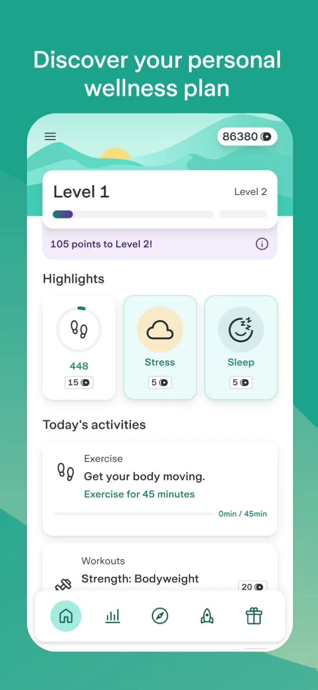
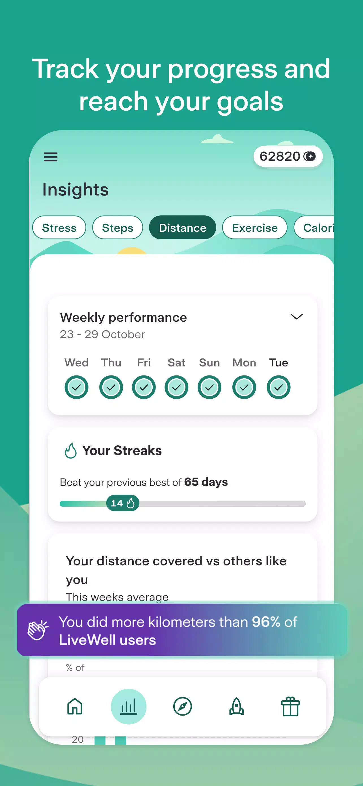
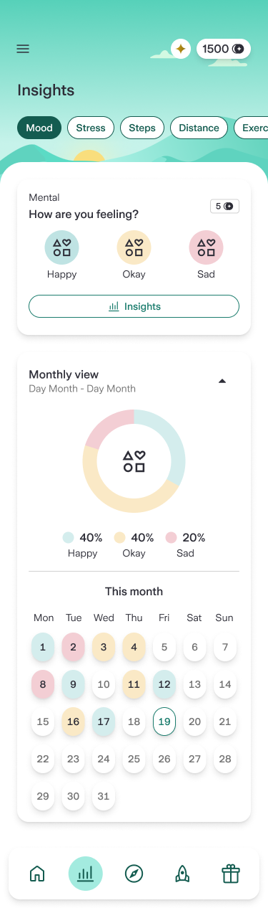
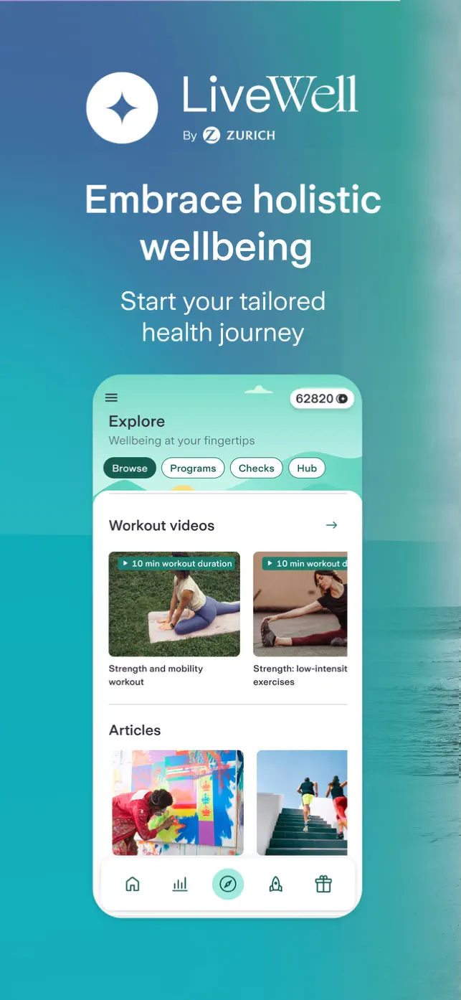
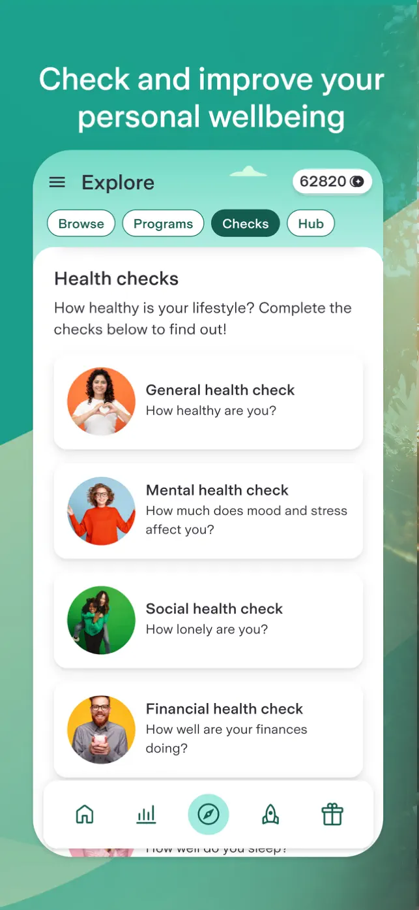
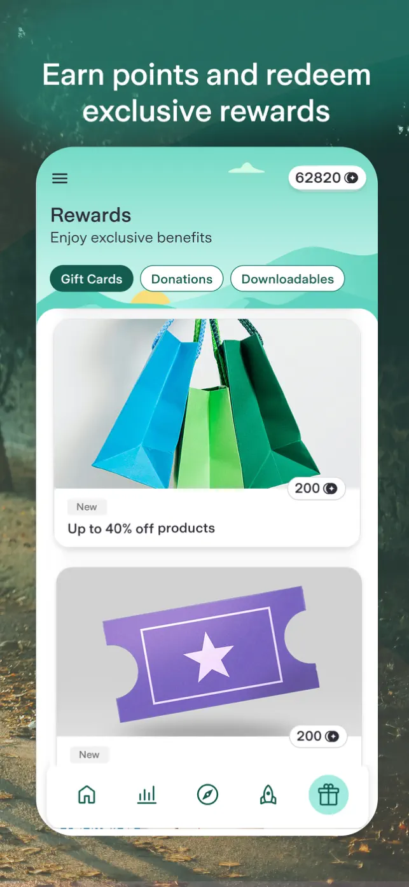

Tracker design and code
I refined the design of the tracker UI across Dashboard and Insights and simplified the Flutter implementation behind it. The two views serve different needs: a quick check-in today and a closer look at progress over time.
LiveWell by Zurich · Product development
I improved how people track their daily habits and see their progress, from active trackers on the Dashboard to calendars and charts in Insights. My work covered both interaction design and Flutter implementation.
Dashboard & Insights
The Dashboard gives people a place to see highlights and act on their current goals. Insights gives those same habits a longer view, so people can see how they have been doing over days and weeks.


I refined the design of the tracker UI across Dashboard and Insights and simplified the Flutter implementation behind it. The two views serve different needs: a quick check-in today and a closer look at progress over time.
I paid particular attention to animation in the trackers, using motion to make changes in state and progress easier to follow as people interact with them.
I integrated trackers into an interactive calendar and chart views. Users could tap a date to add tracker data, then use the charts to see patterns over time.
Insights · Calendar view
The insights view brings the chart and calendar together. The chart summarises recorded tracker data, while the calendar gives users a place to choose a date and add an entry.

Product context
LiveWell brought goal setting, activity tracking and motivation into one wellbeing app. Onboarding helped users select personal health goals, and Dashboard turned those goals into a daily view of activities and active trackers.
Users could monitor habits and progress in Insights. Connections to services such as Apple Health and Google Fit helped bring activity data into the experience.
Users could discover and join individual or team Boosts. Health Points earned through activities could be spent in Rewards. Social Sharing later added a social network within LiveWell.
Explore brought together articles, videos, meditations and polls. It also provided routes to health checks, health scans and telemedicine consultations.


Rewards & Social Sharing
LiveWell’s Health Points connected activities to a rewards catalogue. I contributed Flutter improvements to the Rewards experience, where people could browse options such as gift cards, donations and downloadable content.
I implemented Social Sharing in Flutter, adding a social network within LiveWell where users could connect and share with each other inside the app.

I also built the Flutter component library and helped shape the Figma foundations used in LiveWell.
Explore the LiveWell Design System